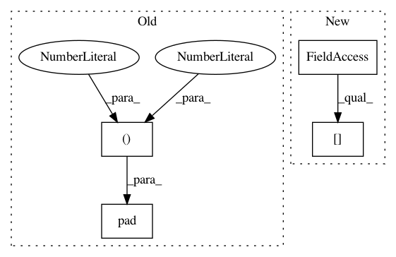

520e8fb57b890a7249334d9e90c9ad209d0b849f,modules.py,retina,extract_patch,#retina#,73
Before Change
if self.exceeds(from_x, to_x, from_y, to_y, T):
pad_dims = [
(0, 0), (size//2+1, size//2+1),
(size//2+1, size//2+1), (0, 0),
]
p = p.numpy()
p = np.pad(p, pad_dims, mode="constant")
p = torch.from_numpy(p)
// add correction factor
from_x += (size//2+1)
After Change
from_y, to_y = patch_y[i], patch_y[i] + size
// cast to ints
from_x, to_x = from_x.data[0], to_x.data[0]
from_y, to_y = from_y.data[0], to_y.data[0]
// pad tensor in case exceeds
In pattern: SUPERPATTERN
Frequency: 3
Non-data size: 4
Instances
Project Name: kevinzakka/recurrent-visual-attention
Commit Name: 520e8fb57b890a7249334d9e90c9ad209d0b849f
Time: 2018-02-10
Author: kevinarmandzakka@gmail.com
File Name: modules.py
Class Name: retina
Method Name: extract_patch
Project Name: maciejkula/spotlight
Commit Name: 396303a7b84fe4f8b304a5878c487ff0b3a16097
Time: 2017-07-08
Author: maciej.kula@gmail.com
File Name: spotlight/sequence/representations.py
Class Name: CNNNet
Method Name: user_representation
Project Name: Calamari-OCR/calamari
Commit Name: 8d0d0c7a6db3904f0222cbe058388a92cf21a548
Time: 2021-02-06
Author: ChWick@users.noreply.github.com
File Name: calamari_ocr/thirdparty/ocrodeg/degrade.py
Class Name:
Method Name: random_pad